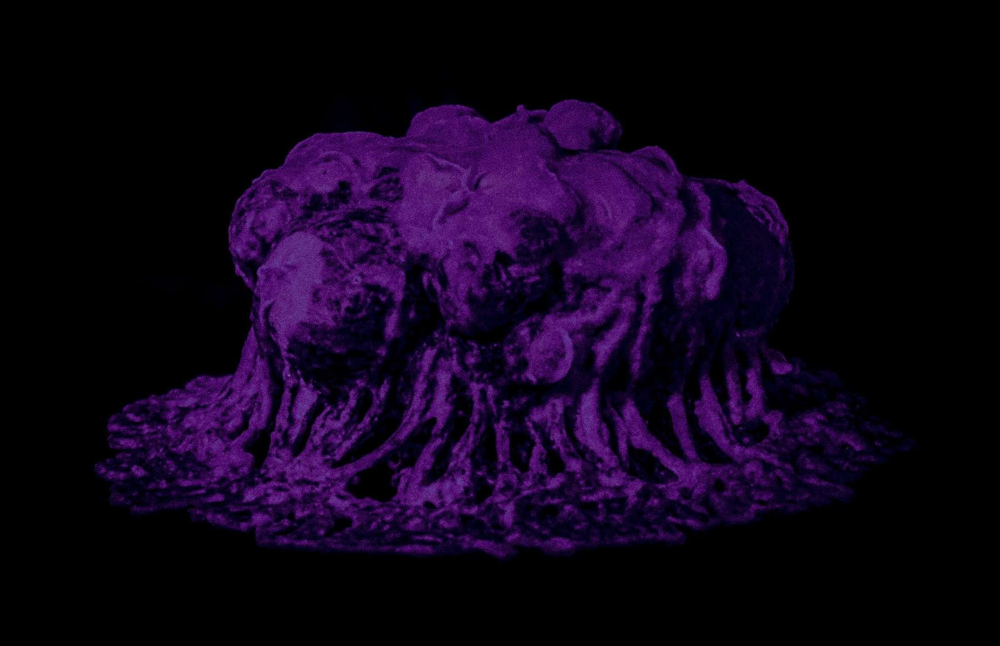
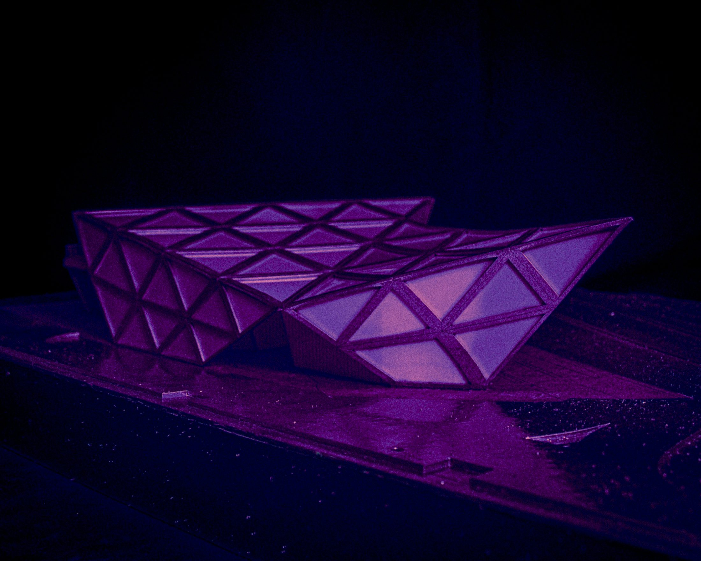
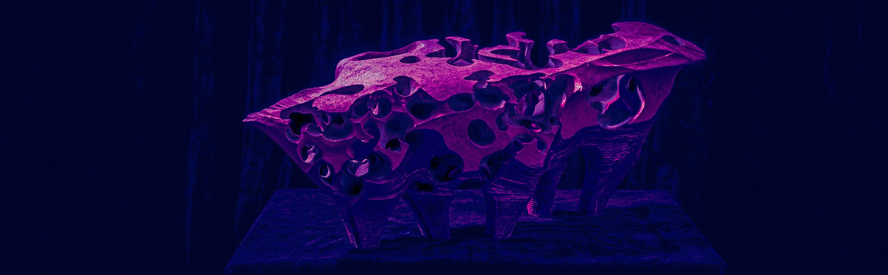
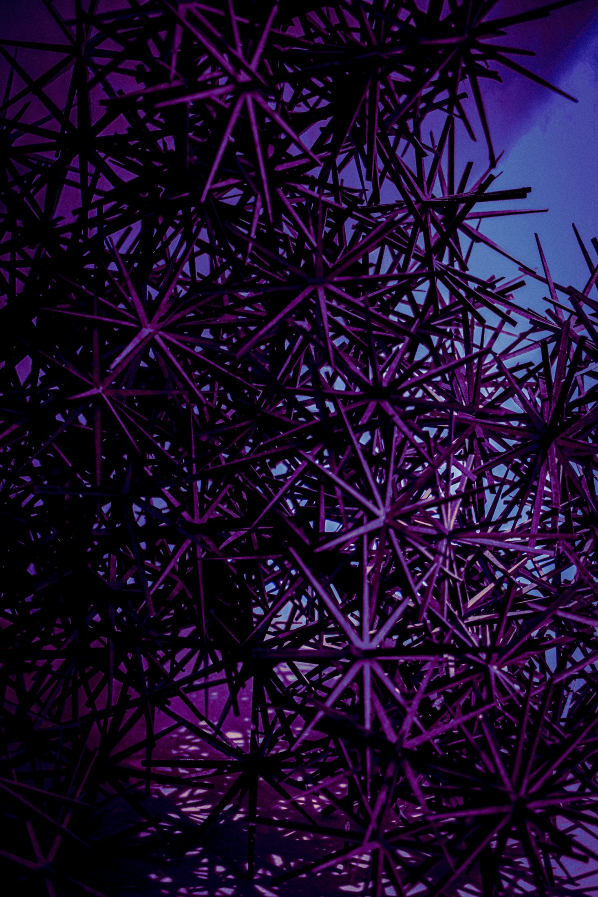

01

Morphogenesis
Simulating how natural forms grow and using that growth to design.
In the projects
Research
My research looks at how nature makes form, and how computation can bring the same logic into architecture.

Simulating how natural forms grow and using that growth to design.
In the projects

Forms in which the structure is the architecture, found from loads, supports and material.
In the projects

Scripting and parametric tools used for form-finding and optimization.
In the projects

Learning from thistles, bones, roots and corals, and asking how machine learning can support design.
In the projects
Every project starts with observation and moves through simulation to a buildable form.
01
Study a natural system, the site and the brief to find the logic worth borrowing.
02
Translate that logic into an algorithm and let loads, growth or aggregation shape the form.
03
Refine the result into architecture: spaces, structure and material.
04
Develop construction, fabrication and the details that make the idea buildable.